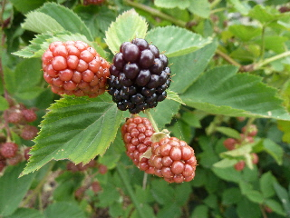
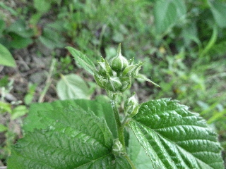
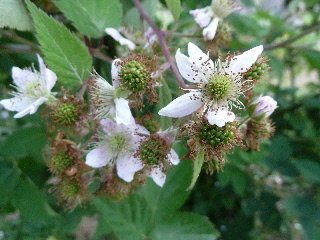
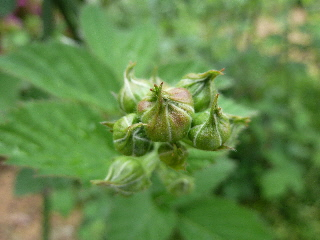
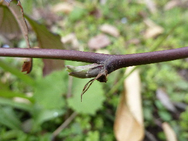
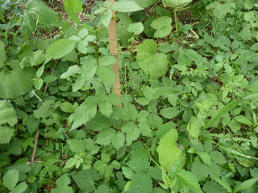
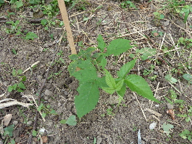

遊びで植物を育てよう
2015/06/28
ブラックベリーを食べました。
ブラックベリーの実が一つだけ黒くなったので、味見しました。

初ものだけあって、爽やかな甘みでした。
もうちょっと甘くなって欲しいな。
たぶん1週間したら大量に収穫が出来そう。
【ブラックベリーTOP】 【果物TOP】 【園芸TOP】
2015/05/31
去年挿し木したブラックベリーに花が付きました。
1年では出来ないと思っていたんですが、出来るんですね。

でも去年挿し木したブラックベリーで、花が付いたのはこの1本だけです。
一番成長が遅い株だけ花が付きました。

親株は花が終わって実が大きくなっています。
若い株は成長も遅いです。
【ブラックベリーTOP】 【果物TOP】 【園芸TOP】
2015/05/03
ブラックベリーの蕾が出来てます。
もうちょっとで花が咲きますね。

去年沢山剪定したので、今年は少ないかな。
剪定の量を考えてやらないといけなかったです。
去年挿し木した木は、まだ花が付いていませんでした。
【ブラックベリーTOP】 【果物TOP】 【園芸TOP】
2015/03/15
ブラックベリーの芽が大きくなってきました。
暖かくなってきましたね。
屋外の作業がしやすくなりました。

ブラックベリーの木の芽も大きくなってきて、そろそろ芽が出そうです。
【ブラックベリーTOP】 【果物TOP】 【園芸TOP】
2014/08/02
ブラックベリーために草抜きをしました。
しばらく面倒を見ていなかったら、雑草に囲まれて見えなくなっていました。

一度草抜きはしたんですが、草が成長するのは速いですね。
草だらけです。

草抜きしてすっきりしました。
この状態が何日持つかな？
【ブラックベリーTOP】
【果物TOP】
【園芸TOP】
巨大化に注意しましょう。
【おいしいものを食べよう。】【たくさん寝よう。】
【ソロ活をしよう!】【季節感のあることをしよう。】【動画視聴はほどほどに。】【当サイトの全てのコンテンツは無断転載禁止です。】